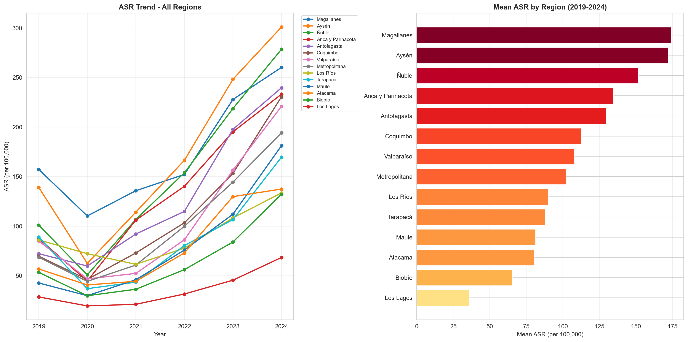

summary_pivot = asr_by_icd.pivot_table( index=['icd_code', 'description'], columns='year', values='asr_total', aggfunc='first').reset_index()summary_pivot.columns.name =Nonesummary_pivot.to_csv(os.path.join(output_path, 'asr_summary_pivot.csv'), index=False)year_cols = [c for c in summary_pivot.columns ifisinstance(c, int) or (isinstance(c, str) and c.isdigit())]format_dict = {col: '{:.2f}'for col in year_cols}summary_pivot.style.format(format_dict, na_rep='-').hide(axis="index")
icd_code
description
2019
2020
2021
2022
2023
2024
F80
Specific developmental disorders of speech and language
5.29
3.67
4.89
6.61
7.80
9.25
F81
Specific developmental disorders of scholastic skills
0.83
0.61
0.75
0.70
1.14
1.39
F82
Specific developmental disorder of motor function
3.31
2.14
2.07
2.77
2.80
3.21
F83
Mixed specific developmental disorders
2.55
1.13
2.33
4.66
5.94
8.16
F84.0
Childhood autism
9.50
7.29
12.41
20.88
36.38
49.27
F84.1
Atypical autism
0.62
0.39
0.48
0.68
1.37
2.07
F84.2
Rett syndrome
0.37
0.18
0.24
0.39
0.39
0.63
F84.3
Other childhood disintegrative disorder
0.04
0.03
0.03
0.03
0.04
0.02
F84.4
Overactive disorder with mental retardation and stereotyped movements
total_hosp = hospitalizations['hospitalizations'].sum()unique_codes = hospitalizations['icd_code'].nunique()years_covered = hospitalizations['year'].nunique()summary_stats = pd.DataFrame({'Metric': ['Total Hospitalizations','Years Covered','ICD Codes Analyzed','Mean Hospitalizations/Year','ASD codes (F84)','ADHD codes (F90)' ],'Value': [f"{total_hosp:,.0f}",f"{years_covered} ({hospitalizations['year'].min()}-{hospitalizations['year'].max()})", unique_codes,f"{total_hosp/years_covered:,.0f}",len([c for c in hospitalizations['icd_code'].unique() if c.startswith('F')]),len([c for c in hospitalizations['icd_code'].unique() if c.startswith('G')]) ]})summary_stats.style.hide(axis="index")
Metric
Value
Total Hospitalizations
47,487
Years Covered
6 (2019-2024)
ICD Codes Analyzed
18
Mean Hospitalizations/Year
7,914
ASD codes (F84)
18
ADHD codes (F90)
0
Table 5: Summary statistics of neurodevelopmental disorder hospitalizations
1.2 Regional Analysis
1.2.1 Age-Standardized Rates by Region
Code
regional_asr_pivot = regional_asr.pivot_table( index='region', columns='year', values='asr', aggfunc='first').reset_index()regional_asr_pivot['Mean ASR'] = regional_asr_pivot[[c for c in regional_asr_pivot.columns if c !='region']].mean(axis=1).round(2)regional_asr_pivot = regional_asr_pivot.sort_values('Mean ASR', ascending=False)year_cols = [c for c in regional_asr_pivot.columns ifisinstance(c, (int, float)) and c !='Mean ASR']format_dict = {col: '{:.2f}'for col in year_cols + ['Mean ASR']}regional_asr_pivot.style.format(format_dict, na_rep='-').background_gradient( cmap='YlOrRd', subset=['Mean ASR']).hide(axis="index")
region
2019
2020
2021
2022
2023
2024
Mean ASR
Magallanes
157.30
110.30
135.78
152.20
227.89
260.20
173.94
Aysén
139.13
62.49
114.17
166.47
248.20
300.94
171.90
Ñuble
101.04
50.87
106.83
153.86
218.70
278.48
151.63
Arica y Parinacota
87.44
44.68
106.09
140.24
195.16
233.15
134.46
Antofagasta
72.24
59.80
92.08
114.90
197.69
239.66
129.40
Coquimbo
69.64
46.25
72.98
103.41
153.19
230.50
112.66
Valparaíso
85.15
46.81
52.36
86.23
156.46
220.91
107.99
Metropolitana
68.67
44.33
60.74
99.87
144.41
194.23
102.04
Los Ríos
86.14
72.23
61.51
77.78
108.34
133.55
89.92
Tarapacá
89.02
36.93
43.54
80.40
106.69
169.56
87.69
Maule
42.68
29.88
45.92
75.89
112.02
181.18
81.26
Atacama
56.80
40.72
44.36
72.98
129.83
137.47
80.36
Biobío
53.42
29.82
36.35
56.13
84.00
132.20
65.32
Los Lagos
28.61
19.54
21.16
31.56
45.49
68.41
35.80
Table 6: Age-standardized hospitalization rates by region (per 100,000)
Code
fig, axes = plt.subplots(1, 2, figsize=(16, 8))all_regions = mean_asr_region['region'].tolist()ax1 = axes[0]for region in all_regions: df_reg = regional_asr[regional_asr['region'] == region] ax1.plot(df_reg['year'], df_reg['asr'], marker='o', linewidth=2, markersize=5, label=region)ax1.set_xlabel('Year')ax1.set_ylabel('ASR (per 100,000)')ax1.set_title('ASR Trend - All Regions', fontweight='bold')ax1.legend(bbox_to_anchor=(1.02, 1), loc='upper left', fontsize=8)ax1.grid(True, alpha=0.3)ax1.set_xticks(YEARS)ax2 = axes[1]data_sorted = mean_asr_region.sort_values('mean_asr', ascending=True)colors = plt.cm.YlOrRd(data_sorted['mean_asr'] / data_sorted['mean_asr'].max())ax2.barh(data_sorted['region'], data_sorted['mean_asr'], color=colors)ax2.set_xlabel('Mean ASR (per 100,000)')ax2.set_title('Mean ASR by Region (2019-2024)', fontweight='bold')ax2.grid(True, alpha=0.3, axis='x')plt.tight_layout()save_figure(fig, 'regional_asr_trends.png')plt.show()

Figure 7: Age-standardized rates trend by region (2019-2024)
Table 12: Age-standardized rates - ASD codes (F84) - National
Code
regional_asr_f_pivot = regional_asr_f.pivot_table( index='region', columns='year', values='asr', aggfunc='first').reset_index()regional_asr_f_pivot['Mean ASR'] = regional_asr_f_pivot[[c for c in regional_asr_f_pivot.columns if c !='region']].mean(axis=1).round(2)regional_asr_f_pivot = regional_asr_f_pivot.sort_values('Mean ASR', ascending=False)year_cols = [c for c in regional_asr_f_pivot.columns ifisinstance(c, (int, float)) and c !='Mean ASR']format_dict = {col: '{:.2f}'for col in year_cols + ['Mean ASR']}regional_asr_f_pivot.style.format(format_dict, na_rep='-').background_gradient( cmap='Blues', subset=['Mean ASR']).hide(axis="index")
Table 15: Age-standardized rates - ADHD codes (F90) - National
Code
regional_asr_g_pivot = regional_asr_g.pivot_table( index='region', columns='year', values='asr', aggfunc='first').reset_index()regional_asr_g_pivot['Mean ASR'] = regional_asr_g_pivot[[c for c in regional_asr_g_pivot.columns if c !='region']].mean(axis=1).round(2)regional_asr_g_pivot = regional_asr_g_pivot.sort_values('Mean ASR', ascending=False)year_cols = [c for c in regional_asr_g_pivot.columns ifisinstance(c, (int, float)) and c !='Mean ASR']format_dict = {col: '{:.2f}'for col in year_cols + ['Mean ASR']}regional_asr_g_pivot.style.format(format_dict, na_rep='-').background_gradient( cmap='Greens', subset=['Mean ASR']).hide(axis="index")
Table 34: Spatial Autocorrelation (Moran’s I) - All Diseases
Code
if has_spatial_data andlen(disease_moran) >0: fig, axes = plt.subplots(1, 2, figsize=(14, 6))# Moran's I values ax1 = axes[0] moran_vals = [(icd, disease_moran[icd].I, disease_moran[icd].p_norm) for icd in disease_moran] moran_vals.sort(key=lambda x: x[1], reverse=True) codes = [x[0] for x in moran_vals] i_vals = [x[1] for x in moran_vals] p_vals = [x[2] for x in moran_vals] colors = ['darkgreen'if p <0.05and i >0else ('darkred'if p <0.05and i <0else'gray') for i, p inzip(i_vals, p_vals)] ax1.barh(codes, i_vals, color=colors) ax1.axvline(x=0, color='black', linestyle='-', linewidth=0.5) ax1.set_xlabel("Moran's I") ax1.set_title("Moran's I by Disease\n(Green=Clustered, Red=Dispersed, Gray=Random)", fontweight='bold') ax1.grid(True, alpha=0.3, axis='x')# P-values ax2 = axes[1] ax2.barh(codes, [-np.log10(p) if p >0else0for p in p_vals], color='steelblue') ax2.axvline(x=-np.log10(0.05), color='red', linestyle='--', linewidth=2, label='p=0.05') ax2.set_xlabel('-log10(P-value)') ax2.set_title('Statistical Significance\n(Values above red line are significant)', fontweight='bold') ax2.legend() ax2.grid(True, alpha=0.3, axis='x') plt.tight_layout() save_figure(fig, 'moran_comparison_diseases.png') plt.show()else: fig, ax = plt.subplots(figsize=(8, 6)) ax.text(0.5, 0.5, 'Insufficient data for Moran comparison', ha='center', va='center', fontsize=14) ax.set_axis_off() plt.show()
![]()